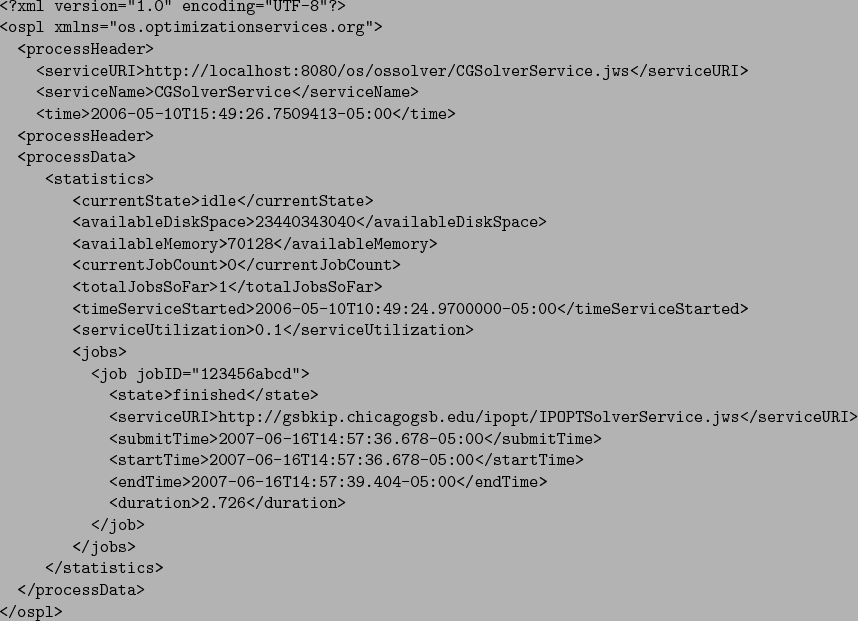

<!DOCTYPE HTML PUBLIC "-//W3C//DTD HTML 3.2 Final//EN">

<!--Converted with LaTeX2HTML 2002-2-1 (1.70)
original version by:  Nikos Drakos, CBLU, University of Leeds
* revised and updated by:  Marcus Hennecke, Ross Moore, Herb Swan
* with significant contributions from:
  Jens Lippmann, Marek Rouchal, Martin Wilck and others -->
<HTML>
<HEAD>
<TITLE>The knock Service Method</TITLE>
<META NAME="description" CONTENT="The knock Service Method">
<META NAME="keywords" CONTENT="osUsersManual_1">
<META NAME="resource-type" CONTENT="document">
<META NAME="distribution" CONTENT="global">

<META NAME="Generator" CONTENT="LaTeX2HTML v2002-2-1">
<META HTTP-EQUIV="Content-Style-Type" CONTENT="text/css">

<LINK REL="STYLESHEET" HREF="osUsersManual_1.css">

<LINK REL="next" HREF="node69.html">
<LINK REL="previous" HREF="node67.html">
<LINK REL="up" HREF="node63.html">
<LINK REL="next" HREF="node69.html">
</HEAD>

<BODY >
<!--Navigation Panel-->
<A NAME="tex2html1104"
  HREF="node69.html">
</A> 
<A NAME="tex2html1100"
  HREF="node63.html">
</A> 
<A NAME="tex2html1094"
  HREF="node67.html">
</A> 
<A NAME="tex2html1102"
  HREF="node1.html">
</A>  
<BR>
<B> Next:</B> <A NAME="tex2html1105"
  HREF="node69.html">The kill Service Method</A>
<B> Up:</B> <A NAME="tex2html1101"
  HREF="node63.html">Solving Problems Remotely with</A>
<B> Previous:</B> <A NAME="tex2html1095"
  HREF="node67.html">The getJobID Service Method</A>
 &nbsp; <B>  <A NAME="tex2html1103"
  HREF="node1.html">Contents</A></B> 
<BR>
<BR>
<!--End of Navigation Panel-->

<H3><A NAME="SECTION000133500000000000000"></A><A NAME="section:knock"></A>
<BR>
The  <TT>knock</TT> Service Method
</H3>

<P>
The OSSolverService terminates after executing the <TT>send</TT> method. Therefore, it is necessary to know when the job is completed on the remote server. One way is to include an email address in the  <TT>&lt;contact&gt;</TT>  element with the attribute <TT>transportType</TT>     set to <TT>smtp</TT>.  This was illustrated in Section <A HREF="node64.html#section:solve">10.3.1</A>.  A second way to check on the status of a job is to use the <TT>knock</TT> service method.  For example, assume a user   wants to know if  the job with <TT>JobID 123456abcd</TT>  is complete. A user would make the request
<PRE>
./OSSolverService -config ../data/configFiles/testRemoteKnock.config
</PRE>
where the <TT>testRemoteKnock.config</TT> file is
<PRE>
-serviceLocation http://gsbkip.chicagogsb.edu/os/OSSolverService.jws
-osplInput ../data/osolFiles/demo.ospl
-osol ../data/osolFiles/retrieve.osol
-serviceMethod knock
</PRE>
the <TT>demo.ospl</TT> file is
<PRE>
&lt;?xml version="1.0" encoding="UTF-8"?&gt;
&lt;ospl xmlns="os.optimizationservices.org"&gt;
&lt;processHeader&gt;
&lt;request action="getAll"/&gt;
&lt;/processHeader&gt;
&lt;processData/&gt;
&lt;/ospl&gt;
</PRE>
and the <TT>retrieve.osol</TT> file is
<PRE>
&lt;?xml version="1.0" encoding="UTF-8"?&gt;
&lt;osol xmlns="os.optimizationservices.org"&gt;
 	&lt;general&gt;
 		&lt;jobID&gt;123456abcd&lt;/jobID&gt;
	&lt;/general&gt;
&lt;/osol&gt;
</PRE>
The result of this request is again a string in OSpL format, with the data contained in its <TT>processData</TT> section.  Part of the return format is illustrated below.
<BR>

<BR>
Notice that the <TT>&lt;state&gt;</TT> element in <TT>&lt;job jobID="123456abcd"&gt;</TT> indicates that the job is finished.

<P>
When making a <TT>knock</TT> request,  the OSoL string can be empty. In this example, if the OSoL string had been empty the status of all jobs kept in the file ospl.xml is reported.  In our default solver service implementation, there is a configuration file <TT>OSParameter</TT> that has a parameter <TT>MAX&#5;FJOBIDS&#5;FTO&#5;FKEEP </TT>.  The current default setting is 100.  In a large-scale or commercial implementation it might be wise to keep problem results and statistics in a database.  Also, there are values other than <TT>getAll</TT> (i.e. get all process information related to the jobs) for the OSpL <TT>action</TT> attribute in the <TT>&lt;request&gt;</TT> tag.  For example, the <TT>action</TT> can be set to a value of <TT>ping</TT> if the user just wants to check if the remote solver service is up and running. For details, check the OSpL schema.

<P>
<HR>
<!--Navigation Panel-->
<A NAME="tex2html1104"
  HREF="node69.html">
</A> 
<A NAME="tex2html1100"
  HREF="node63.html">
</A> 
<A NAME="tex2html1094"
  HREF="node67.html">
</A> 
<A NAME="tex2html1102"
  HREF="node1.html">
</A>  
<BR>
<B> Next:</B> <A NAME="tex2html1105"
  HREF="node69.html">The kill Service Method</A>
<B> Up:</B> <A NAME="tex2html1101"
  HREF="node63.html">Solving Problems Remotely with</A>
<B> Previous:</B> <A NAME="tex2html1095"
  HREF="node67.html">The getJobID Service Method</A>
 &nbsp; <B>  <A NAME="tex2html1103"
  HREF="node1.html">Contents</A></B> 
<!--End of Navigation Panel-->
<ADDRESS>
Kipp Martin
2008-01-16
</ADDRESS>
</BODY>
</HTML>
